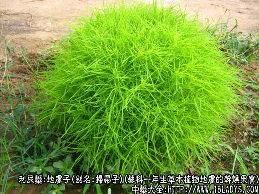
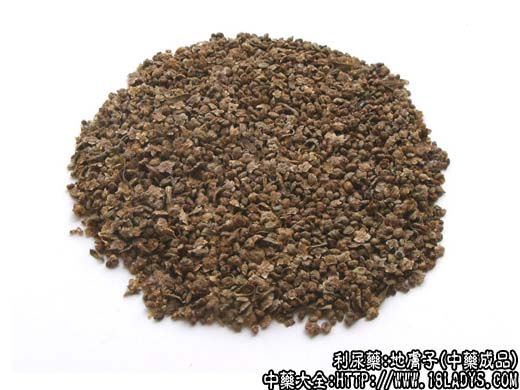
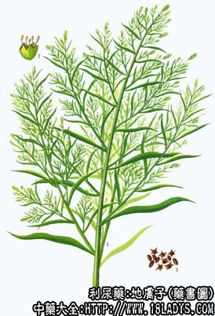

地肤子为少常用中药，《神农本草经》列为上品。
别名：扫帚子。
来源：为藜科一年生草本植物地肤的干燥果实。多为栽培。
产地：主产于华北、西北、山东、河南等地，全国各地均有分布。
性状鉴别：胞果扁圆形或五角星形。直径2～3毫米。外面宿存花萼膜质，灰褐色或带红晕，有翅五枚，排列成五角星状。翅易脱落。背面中央有果柄痕。并可见十数条放射状棱线。剥离花萼内有种子已枚。褐棕色，形似芝麻而小，长约1毫米。内种仁显油性。胚绿黄色，形如马蹄。胚乳白色。气无，味先微咸而后苦酸，并有麻喉感。
以果实饱满，不带枝叶等杂质者为佳。
主要成分：含皂甙和维生素A类物质。
功效与作用：清湿热（利尿、抗皮肤真菌）。
炮制：生用。
性味：苦寒。
归经：入膀胱经。
功能：清湿热，利小便。
主治：内服治膀胱炎之小便不利，淋浊，外用治皮肤湿疮，风湿关节炎等症。
临床应用：1、作为利尿的辅助剂，可加强其它利尿药的作用，即前所称能作为利水的“响导”，治热淋或水肿，常配瞿麦、猪苓、通草等通用。
2、较常用于治疗皮肤湿热或风热，例如各种湿疹、痒疹。内服或外用均可。内服配生地、野菊花、白藓皮，方如除湿消疹汤。外用配蛇床子等煎洗患部。
用量：内服3～15g，外用适量。
处方举例：除湿消疹汤：地肤子15g，白藓皮9g，川萆薢12g，苦参9g，野菊花9g，生地12g，赤芍9g，当归9g，水煎服。
注：地肤子原植物有绿茎和粉红茎两种。据北京药检所化验，化学成分不同，绿色这醇浸出物无结晶，粉红色者有结晶。北京只用绿茎地肤子，不用粉红色茎者。天津市两者通用。
在华东、湖南、江西、贵州等省市用藜科植物藜的胞果，俗称灰莱子，作地肤子用。地肤子呈钝三角球形稍扁。直径约1毫米。草绿色或暗绿色。略似地肤子，但不具五翅。种子扁平球形。气味与上种同。
在四川、云南部分地区使用豆科植物木樨种子，作地肤子用。地肤子荚果呈扁平卵形。长约3毫米，宽约2毫米。表面灰褐色，具网状花纹。顶端渐尖，呈鸟嘴状，基部常有宿存杯状花萼，有5片披针形的裂片，荚果不开裂，内含浅棕色种子已粒，卵圆形，具两片黄色子叶。气微，味微苦。
以上两种京津地区均不使用。